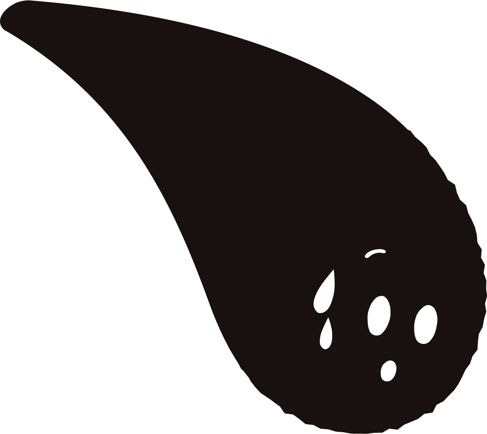

{{ theme }}
{{ item.num }}
{{ item.why }}
{{ item.answer }}
{{ qa.num }}
{{ qa.why }}？

 途中セーブ
途中セーブ ヘルプ
ヘルプ

入力したら、回答内容が自分の外側の
ことなのか内側のことなのかによって
左のナンバーボタンの色を変えるテン！
外なら１回、内なら２回タップするテン。
外：環境や状況、一般的な事実など
内：自分の考えや感情・気持ち、体験など

次は、前の回答に対して「なぜ……
なのか？」という質問を自分で立てて、
またそれに回答していくテン！
今回は、「なぜ留学生と話せると良いの
か？」→「違う文化を持つ人と話してみ
たいから」としてみるテン。
また同じように、「なぜ……？」を
入力してそれに回答するテン。これを
5回以上繰り返すテン！
大変だけど、どんどん自分を深掘りして
いけるんだテン！
今回は特別に、3〜5回目まで僕がやっ
てみるテン。ちゃんと見ておくテン！


ふぅ…自分を見つめられたことだし、
そろそろ満足だテン。
記録を残して終わりにするテン！